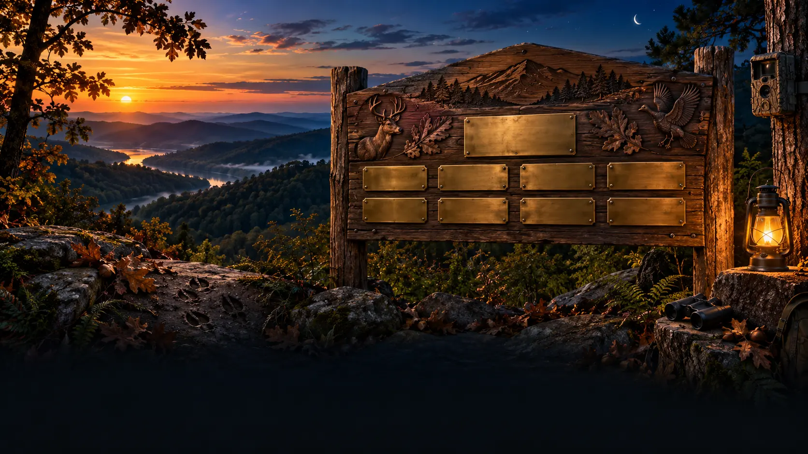

Founding Sponsors
The early believers who helped WVLRP move from an idea into a living community.
HONOR NAMES WILL APPEAR HERE
WVLRP is free for everyone to watch because people, families, businesses, and organizations choose to stand behind the cameras and the work.
This page permanently recognizes the supporters who help cover cameras, relays, hosting, maintenance, wildlife feed, and the next stage of the project.
The early believers who helped WVLRP move from an idea into a living community.
HONOR NAMES WILL APPEAR HERESupporters who help keep an individual camera online, maintained, and growing.
CAMERA RECOGNITION AVAILABLEOrganizations that contribute resources, knowledge, reach, or hands-on support.
PARTNERSHIP RECOGNITION AVAILABLESponsors help protect free public access while making better equipment, more cameras, education, contests, community features, and future projects possible. Recognition can support WVLRP as a whole or follow a specific compatible camera.